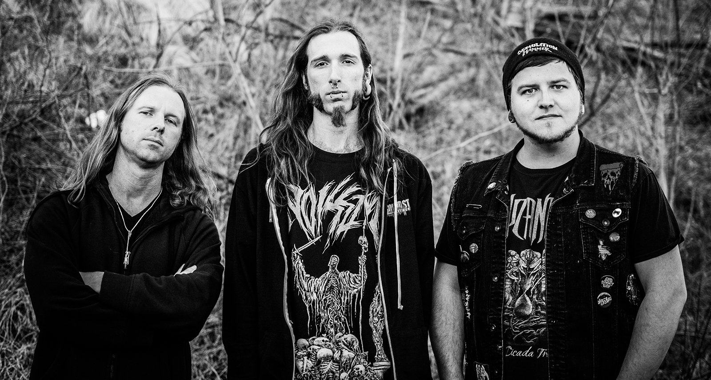

FOR FANS OF:
Metallica, Carcass, Demolition Hammer, Protector
BIO
Ashes of Mankind was formed in early 2016 in Baltimore, Maryland. Blending early 1990's death metal with the breakneck speed and intensity of 1980's thrash metal, Ashes of Mankind immediately started a whirlwind in their hometown. Shortly after releasing their debut EP Tides of War they were signed to Lost Apparitions Records. After releasing their full length album A Scene in Hell Ashes of Mankind toured the East coast, from Philadelphia to Tampa, and shared stages with international heavyweights such as Aborted, Demolition Hammer, Cryptopsy, and Deicide. Recently they returned to the studio to record their sophomore effort, Blistered Earth, which is due to be released early 2020 on Lost Apparitions Records worldwide.
BAND MEMBERS
Armon Nicholson: Guitar/vocals
Alex Lewis: Bass/backing vocals
Ashton Caplan: Drums
MUSIC
CONTACT
FOLLOW US ON SOCIAL MEDIA:


© Copyright Ashes of Mankind 2020 | All Rights Reserved | Website by Armon Nicholson | Photography by Alessa Nicholson, Tigran Kapinos, and Shane Gardner